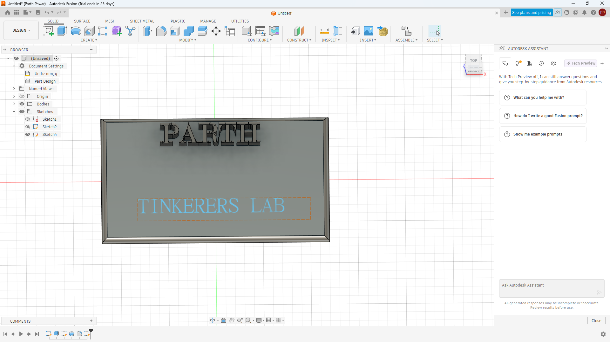

Internship Day 6 Documentation
Day 6 Overview
On Day 6 of the internship, I continued improving my 3D design and digital modelling skills using Autodesk Fusion and Blender. I explored creative modelling workflows, personalized product design, and project refinement techniques.
Fusion 360 Name Stand
- Designed a custom 3D name stand using Autodesk Fusion
- Learned sketch-based text modelling workflow
- Explored extrusion and support structure concepts
- Improved CAD modelling accuracy and workflow
Fusion Name Stand Model
Created a personalized 3D printable name stand design using Autodesk Fusion. Practiced text sketching, extrusion operations, and product visualization workflow.

Blender Project Improvement
- Refined sculpting workflow in Blender
- Improved face structure and mesh detailing
- Practiced smoothing and proportional editing
- Explored creative digital sculpting workflow
Blender Sculpt Improvement
Enhanced the previously created Blender sculpt by improving facial structure, smoothness, and overall digital sculpting quality. Learned better mesh control and detailing workflow.

Extra Activities
- Explored creative product visualization ideas
- Improved technical documentation workflow
- Learned better file organization and project management
- Continued improving GitHub portfolio updates
Learning Outcome
Day 6 enhanced my understanding of personalized CAD design, creative modelling, and digital sculpting workflows. I improved my ability to combine engineering design with creativity and technical documentation.